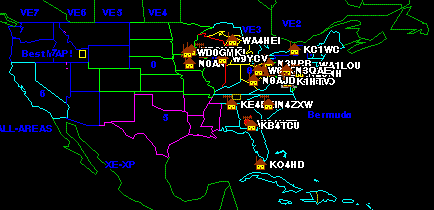
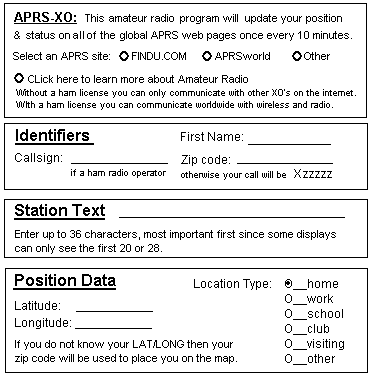

APRS Position & Messaging for OLPC
APRS Position & Messaging for OLPC
APRS Position & Messaging for OLPC
APRS Position & Messaging for OLPC
APRSXO written by Jack Zielke, KG4GJY, is now available.
APRS Universal Messaging Initiative: Putting a minimum APRS capability onto the OLPC XO laptop is just one part of the Universal Ham Radio Messaging Iinitiative. . We want all wireless devices to be able to be used for text-messaging between ham radio operators by callsign-alone. The XO is an excellent wireless PC for such an application whenever it is in range of a WI-FI network. .
Here are Jack's instructions on how to download and install APRSXO on your OLPC. Probably better now that he has his own web page to go there for details.
When the downloads finishes you should have a new icon on the tray bar.
It will be at or near the end.
APRSXO Project: . This web page was drafted early in 2008 to lay out the design objectives of such a minimum APRS messaging client on such a device. The project consists of these major elements:
The map below could be representative of such a web page. (it is a fake).

But the FINDU APRSXO web page is real, because APRS has defined a special symbol for the XO so that FINDU can select them. . In APRS, we suggest the XO laptop use an "X" overlayed on the Alphabetic Box, which is specified in APRS as the "XA" symbol.
USER INTERFACE: . The image below was a concept dialog-box for how the user would set up his XO client parameters. Jack did a great job on implementing this in APRSXO.

APRS WIRELESS DEVICE IMPLEMENTATION: . The following items detail the approach needed to design and implement something like APRSXO on any WIFI, Cell phone, Palm device or wireless laptop system. First all amateur radio XO's should the XO symbol so that they can be displayed on APRS such as on the FINDU System . Second we need the application to send a formatted line in the APRS format and inject it into the APRS Internet System (APRS-IS). The above set-up parameters will be formatted as follows:
Text: . The user can enter any other free text if he likes to either replace the "Name's home XO." or to add onto the end of the free field.
CONCLUSION: . Using these kinds of simple APRSXO applications will be a great way for OLPC users and any other wireless device users to find each other and for them to find local MESH's to join. . In fact, it is a great Application for EVERY ham radio operator with an wireless device!.
WB4APR, Bob